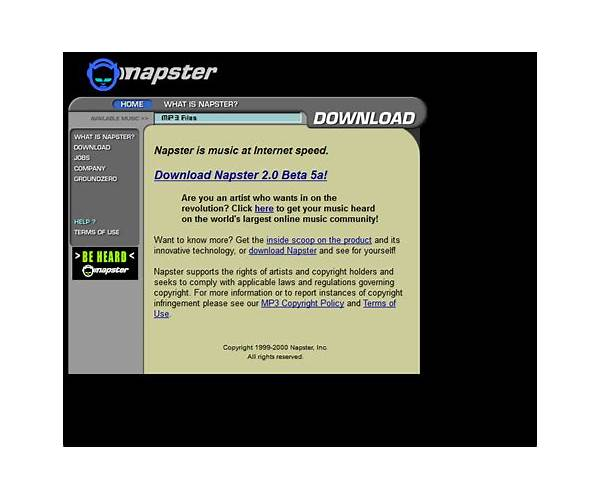

Napster
Eighteen months in which every song ever recorded was one search away.

In June 1999, a teenager named Shawn Fanning, working with Sean Parker, released a program that did one thing: it connected your hard drive to strangers' hard drives, and theirs to yours, and let music travel between them. It was called Napster, and the eighteen months that followed are still the closest the internet ever came to being a jukebox. [S1]
Understand what it popularized: peer-to-peer file sharing for music. No store, no warehouse, no company holding the songs -- just a directory of who had what, and a million private computers trading with each other directly. The recording industry had spent decades selling objects. Napster's entire premise was that the object was optional. [S1]
The scale arrived instantly. By 2000-2001 the service was reported to have tens of millions of registered users -- exact figures varied then and vary now, but the direction was not in dispute. A dorm-room tool had become the fastest-adopted software of its era, and every one of those users was, in the industry's accounting, a lost sale or a new criminal, depending on which memo you read. [S1]
The industry chose law. In December 1999 the major-record-label trade group sued -- A&M Records v. Napster -- and the case became the defining fight of the era: an industry trying to litigate a technology out of existence. The court rulings came down against Napster, and in July 2001 the service shut itself down. From release to darkness: two years and one month. [S1] [S2]
The company filed for Chapter 11 bankruptcy in 2002. The brand, being a good brand, survived the company that ruined it: sold and resold, "Napster" resurfaced on legal music services under other owners, a name for renting what it once liberated -- the revolution's headstone repurposed as the revolution's gift shop. [S1]
The verdict of the people who lived through it has not changed in a quarter century. In 2024, Hacker News marked twenty-five years since Napster sparked a file-sharing revolution, and the thread is a reunion of the converted: hundreds of commenters agreeing that everything since -- stores, streams, subscriptions -- is Napster with a receipt attached. [S3]
And note the recurring heresy, never quite killed: a 2012 thread titled "Sad but true: Napster '99 still smokes Spotify 2012." It is not really a claim about bitrates. It is nostalgia for completeness -- for the few months when the long tail was the whole animal, when the obscure B-side was as findable as the hit, because the catalog was not a licensing negotiation but everyone's combined collections. [S4]
That is the honest epitaph. Napster was shut down, and its lesson was adopted rather than learned: the industry that killed it spent the next two decades rebuilding what it had destroyed, minus the freedom, plus a monthly fee. The program died in 2001. The expectation it created -- every song, immediately, everywhere -- is the water the entire music business now swims in.
In 1999 a kid connected the world's hard drives. In 2001 a court unplugged the cable. The songs never went back in the box.
Remembered: the summer every song was one search away, and the lawsuit that could not un-hear it.
Sources
- S1: Wikipedia: Napster -- https://en.wikipedia.org/wiki/Napster
- S2: Wikipedia: A&M Records, Inc. v. Napster, Inc. -- https://en.wikipedia.org/wiki/A%26M_Records,_Inc._v._Napster,_Inc.
- S3: Hacker News (2024-06-01, 389 points) -- https://news.ycombinator.com/item?id=40545436
- S4: Hacker News (2012-03-17, 206 points) -- https://news.ycombinator.com/item?id=3716948
PROVENANCE
| Exhibit no.: | 013 |
| Data-source mode: | facts: seed-corpus; wikipedia-unreachable; wayback-cdx-unreachable; hn-algolia (live, subject query) |
| Illustration: | sourced image -- Bing image search, retrieved 2026-08-29 |
| Found via: | bing-image-search |
| Image url: | https://ts4.mm.bing.net/th?id=OIP.ofp47cJnX68_drQ5XT-ueQHaGL&pid=15.1 |
| Generated: | 2026-08-29 |
| Generator: | deadweb-pipeline 0.1 (deterministic scaffold) |
| Editorial pass: | web-product-engineer (editorial pass 2) |
| Status: | published |
| Source page: | https://www.webdesignmuseum.org/gallery/napster-2000 |
SOURCES
- Wikipedia: Napster -- https://en.wikipedia.org/wiki/Napster
- Wikipedia: A&M Records, Inc. v. Napster, Inc. -- https://en.wikipedia.org/wiki/A%26M_Records,_Inc._v._Napster,_Inc.
- Hacker News thread: "Napster sparked a file-sharing revolution 25 years ago" (2024-06-01) -- https://news.ycombinator.com/item?id=40545436
- Hacker News thread: "Sad but true: Napster '99 still smokes Spotify 2012" (2012-03-17) -- https://news.ycombinator.com/item?id=3716948